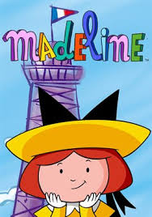
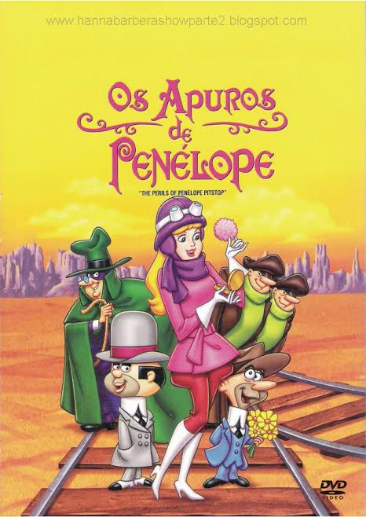

Charlie e Lola: é uma série de animação infantil baseada nos livros de Lauren Child, que conta as aventuras de Charlie, um menino de sete anos paciente e criativo, e sua irmã mais nova, Lola, uma menina de quatro anos cheia de energia, imaginação e opiniões fortes sobre o mundo.

Madeline: é uma animação infantil sobre as aventuras de Madeline, a menor, mas a mais corajosa de doze meninas que vivem num internato em Paris com a sua tutora, a Senhorita Clavel.

Penélope Charmosa: conta a história de uma jovem e rica herdeira, que está em constante perigo devido às armadilhas do seu guardião, o vilão Silvestre Soluço (Tião Gavião), que secretamente tenta apoderar-se da sua fortuna.

Toro e Pancho: é um desenho animado estadunidense (originalmente "Tijuana Toads") que mostrava as aventuras e confusões de dois sapos, Toro e Pancho, ao longo dos episódios